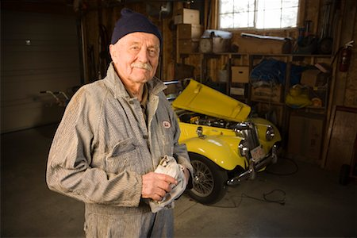

Günther Ewald
CEO & Fundador
Günther@yahoo.com
Conrado Dietrich
Gerente
Conrado@yahoo.com

Ricardo Ewald
Diretor
Ricardo@yahoo.com
Carro velho não vale nada, Carro antigo não tem preço.
A RestauraCAR não é apenas uma oficina, é uma clínica automobilística. No mercado desde 1968 encontra-se na segunda geração de proprietários. Criada por Günther Ewald e Conrado Dietrich, atualmente é dirigida por Ricardo Ewald. A partido do final dos anos 90 a RestauraCAR passou por um processo de transformação dos processos de atendimento e utilização de produtos. Passou a seguir os padrões internacionais da International Association of Car Restauration e tem seu trabalho certificado pela Car Guide Howards. Por isto, transformou na principal oficina de restauração de carros do Brasil.
CEO & Fundador
Günther@yahoo.com
Gerente
Conrado@yahoo.com
Diretor
Ricardo@yahoo.com
| Segunda-Feira | 8:00 - 18:00 |
|---|---|
| Terça-Feira | 8:00 - 18:00 |
| Quarta-Feira | 8:00 - 18:00 |
| Quinta-Feira | 8:00 - 18:00 |
| Sexta-Feira | 8:00 - 17:00 |
| Sábado | 8:00 - 12:00 |